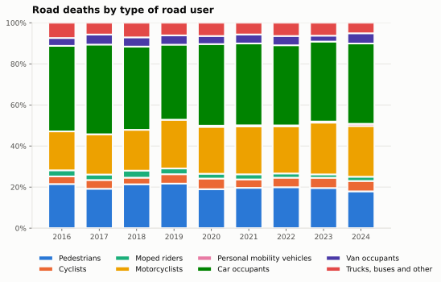
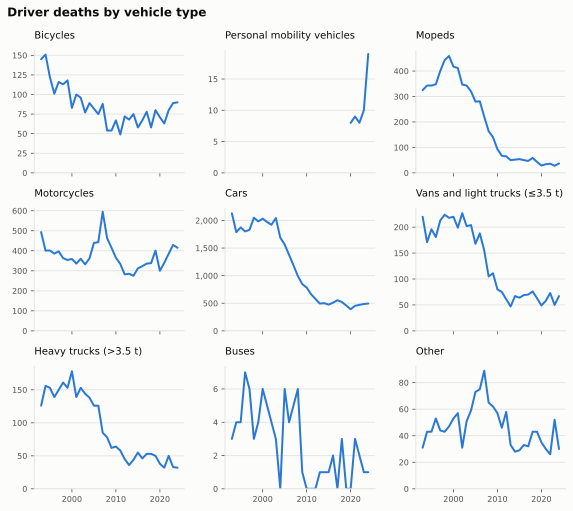
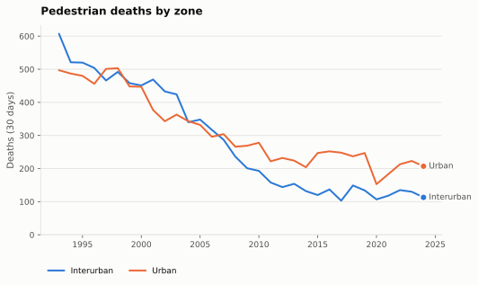

Road users
How road deaths are distributed across pedestrians, riders and vehicle occupants, and how that mix has shifted over three decades.
Who dies on the road

| Road user | Deaths 2016 | Deaths 2019 | Deaths 2024 | Share 2024 |
|---|---|---|---|---|
| Car occupants | 754 | 641 | 698 | 39.1% |
| Motorcyclists | 343 | 417 | 441 | 24.7% |
| Pedestrians | 389 | 381 | 320 | 17.9% |
| Cyclists | 67 | 80 | 90 | 5.0% |
| Van occupants | 69 | 80 | 89 | 5.0% |
| Heavy truck occupants (>3.5 t) | 55 | 55 | 39 | 2.2% |
| Moped riders | 54 | 49 | 37 | 2.1% |
| Other vehicles | 35 | 37 | 31 | 1.7% |
| Personal mobility vehicles | 19 | 1.1% | ||
| Light truck occupants (≤3.5 t) | 19 | 6 | 13 | 0.7% |
| Bus occupants | 21 | 3 | 6 | 0.3% |
| Unspecified vehicle | 4 | 6 | 2 | 0.1% |
Pedestrians, cyclists, moped riders, motorcyclists and personal-mobility-vehicle users are the vulnerable road users: they have no protective shell. Their share of all deaths is far higher on urban streets than on interurban roads.
| Year | Interurban | Urban |
|---|---|---|
| 2016 | 33.9% | 80.2% |
| 2017 | 32.5% | 80.2% |
| 2018 | 35.5% | 81.2% |
| 2019 | 40.5% | 82.3% |
| 2020 | 37.9% | 79.8% |
| 2021 | 38.8% | 80.3% |
| 2022 | 38.6% | 81.0% |
| 2023 | 40.6% | 80.1% |
| 2024 | 40.1% | 78.7% |
Drivers, by vehicle, since 1993

Car-driver deaths fell by 77% between 1993 and 2013 and have been flat since (495 in 2024). Motorcyclist deaths did not follow: they rose through the 2000s, dipped, and are back at 415 in 2024, above their 1997–1999 average of 371 and close to the number of car drivers killed.
Pedestrians
